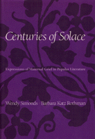

The change in popular consolation literature over two centuries
The change in popular consolation literature over two centuries


 The change in popular consolation literature over two centuries
The change in popular consolation literature over two centuries

|  |
Centuries of SolaceExpressions of Maternal Grief in Popular LiteratureWendy Simonds and Barbara Katz Rothmancloth EAN: 978-0-87722-931-5 (ISBN: 0-87722-931-7) |
"A challenging book that explores with insight, compassion and scholarship women's writing about pregnancy loss and the death of a child. It reveals that intense emotions about miscarriage and still birth have always been a powerful, shared experience in the submerged culture of women."
—Sheila Kitzinger, author of The Complete Book of Pregnancy and Childbirth
Since the late 1970s, the grief of women who experienced miscarriage, stillbirth, or the death of an infant has been an increasingly visible topic in mainstream American publications. Wendy Simonds and Barbara Katz Rothman look to 19th-century women's magazines and later to confession magazines to explore the antecedents of modern writings on maternal grief and the information they convey about women from each time period. This is the first book that analyzes popular consolation literature as it changed over two centuries. The authors include a large selection of the writings that they view as social records that recognize and legitimize women's experience.
Women's magazines of the last century, such as Godey's Lady's Book and Petersen's, ran numerous poems, stories, and essays in which middle-class women writers shared their grief through symbolic language and Christian evangelism. Expressions of maternal grief vanished from mainstream publications as they became increasingly secularized but reappeared in the early 20th century in True Story, the first "pulp" confessional. Marketed to working-class women, these stories and the numerous letters from readers printed in each issue attest to a community of women trying to help each other through difficult life experiences.
As women gain power in the "public" world, maternal grief is again a valid subject for mass market magazines. Modern publications, such as Glamour magazine, urge contemporary readers to join self-help groups where they will find emotional catharsis and permission to grieve. Centuries of Solace makes possible a more complete understanding of the changing social meaning of motherhood in America.
"Simonds and Katz Rothman have uncovered for us from the past very moving accounts by mothers whose babies had died. In doing so, they shed important light on contemporary discussions of grief and loss. The words of these mothers, form both working and middle classes, touch us and teach us about the universality of grief, as well as about the realities of loss which every woman experiences."
—Judith N. Lasker, coauthor (with Susan Borg) of When Pregnancy Fails: Families Coping with Miscarriage, Stillbirth, and Infant Death
Acknowledgments
Part I: Introduction
Part II: The Mother's Lament: Nineteenth-Century Consolation Literature
Excerpts from Nineteenth-Century Consolation Literature
1. To a Gentleman and Lady on the Death of the Lady's Brother and Sister, and a Child of the Name Avis, Aged One Year
2. The Mother's Lament
3. The Bird and Child
4. Stanzas on the Death of Miss Rebecca Ann Marshall
5. The Angel of Death
6. An Infidel Mother
7. At Rest
8. My Child (Lamoreux)
9. My Child (North)
10. This Is a Mother’s Grief
11. A Mother’s Prayer for Her Sick Child
12. Starving
13. The Little Ones
14. A Silent House
15. To an Infant
16. The Baby’s Drawer
17. The Wail of the Cornish Mother
Part III: Confessions of Loss: Maternal Grief in True Story
Excerpts from True Story
18. The Children Nobody Wanted
19. The Empty Crib
20. God Sent Me a Miracle
Part IV: The Demand for Solace: Contemporary Maternal Consolation Literature
Excerpts from Contemporary Consolation Literature
21. Life and Death
22. I Learned to Live Through a Mother’s Greatest Loss
23. The Death of a New Baby
24. When a Baby Dies
25. Making Loving Memories
26. Comfort Us Lord—Our Baby Died
27. My Precious Baby
28. To Forrest
29. Letter from K.S.
30. Infant Death
31. Miscarriage
32. The Lost Children
33. Stillbirth
34. Intensive Care Nursery
35. Giving Away the Layette
Part IV: On Maternal Grief and Public Policy
Notes
Bibliography
Index
Permissions
Wendy Simonds is Assistant Professor of Sociology at Emory University.
Barbara Katz Rothman is Professor of Sociology at Baruch College and the Graduate Center, City University of New York.
Health, Society, and Policy, edited by Sheryl Ruzek and Irving Kenneth Zola.
No longer active.
Health, Society and Policy, edited by Sheryl Ruzek and Irving Kenneth Zola, takes a critical stance with regard to health policy and medical practice, ranging broadly in subject matter. Backlist titles include books on the legal and professional status of midwifery, the experience and regulation of kidney transplants, the evolution of federal law on architectural access, and a political/ethical argument for making the community responsible for universal access to health care.
© 2015 Temple University. All Rights Reserved. This page: http://www.temple.edu/tempress/titles/645_reg.html.